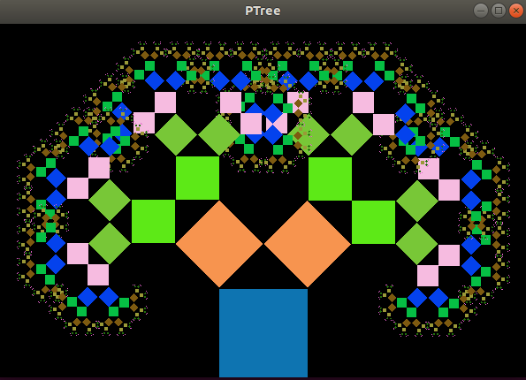
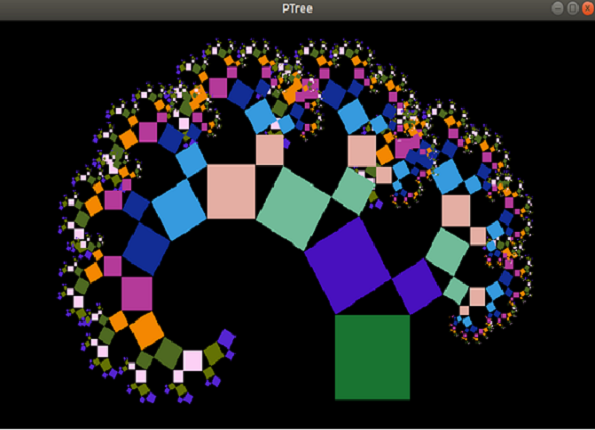

My name is Minh Le, and I am from Vietnam. I started my college life in 2012 in Vietnam. I studied information technology, but I didn't complete it since I moved to the U.S. in 2016.
I had some experience in the computer field, so I chose computer science to study when I applied to Bunker Hill Community College. I completed my associate degree in computer science with the highest honor in 2019. Then, I transferred to the University of Massachusetts Lowell to complete my bachelor's degree in computer science with summa cum laude in 2021.
Now, I am looking for an entry-level position in a software development company to utilize my relevant experience and problem-solving skills. The best skill that I have is willing to study new things. I always put a lot of effort into learning them, so I usually get good grades in school.
I created this game in my free time when I studied ESL. At this time, I could not study computer science class because of my poor English. This game is kind of similar to shooting balloon that I played when I was a child.
I created a pong-game by reference from my textbook. Players can control the paddle to earn score after the ball hit the paddle. If the player earns 2 points, the ball will change the color and increasing speed. If the player misses the ball, the paddle will increase its size.
I created a shooting game. Users can control a rectangle and try to kill other enemies. After kill all of enemies, the number of enemies will increase by one for the next round. The users lose after 3 times be killed. The users can change the color, speed or save the game.


I used SFML and recursion to draw a Pythagoras Tree. The users can enter the left angle and the right angle of the middle triangle to draw the tree as the second picture. The left angle and the right angle are equal to 45 degree as the first picture.
I created a game using jQuery UI framework where the users can place valid English words on the board to earn scores.